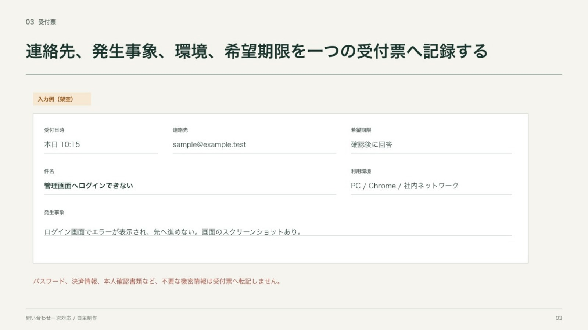
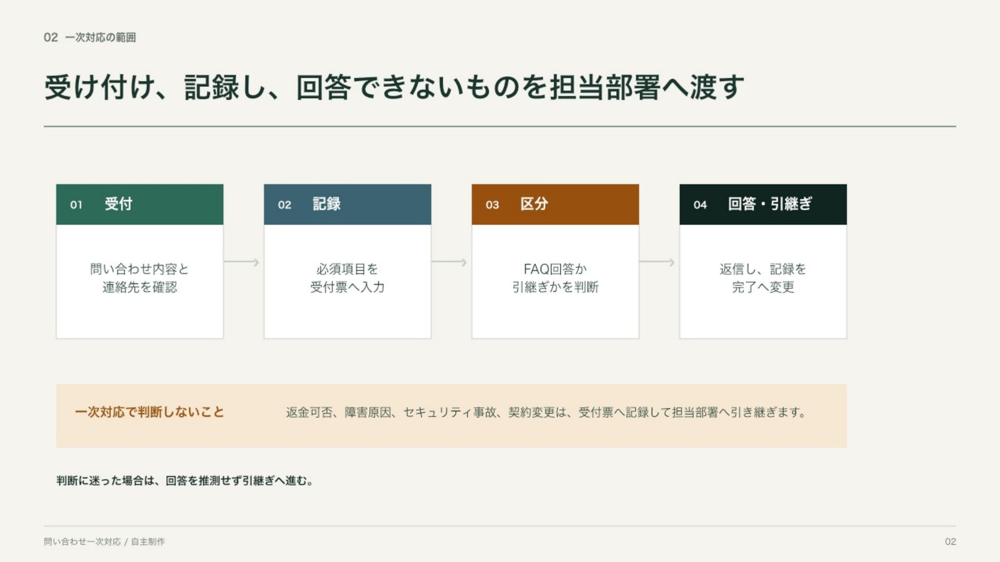
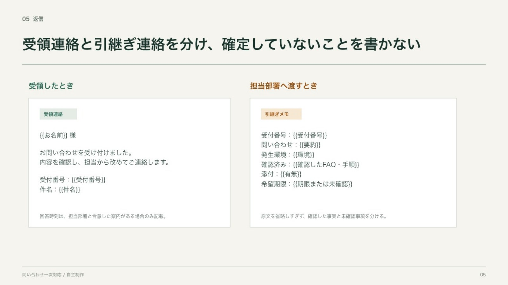
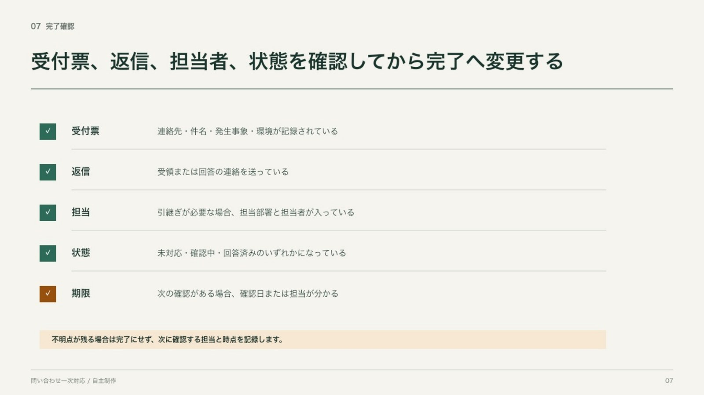

自主制作 02 / PowerPoint / 7ページ
一次対応で迷わない手順をつくる
新任メンバーが、問い合わせの受付、記録、回答可否の判断、担当部署への引継ぎ、完了確認を順に追える業務マニュアルです。実在企業の規程や問い合わせ記録は使っていません。

業務設計
一次対応の範囲を、最初に狭くしました。
新任者向けの資料では、詳しい説明を増やすほど判断範囲が曖昧になることがあります。このケースでは「受け付ける」「記録する」「承認済みFAQに沿って回答する」「判断できないものを渡す」に範囲を限定しました。
- 01対象と対象外を分ける
返金、障害原因、セキュリティ判断は、一次対応で決めない前提にしました。
- 02受付情報を一つに集める
連絡先、事象、環境、希望期限を受付票へまとめました。
- 03回答と引継ぎを分岐する
承認済みFAQと条件が一致する場合だけ回答し、それ以外は担当部署へ渡します。
- 04返信と引継ぎメモを分ける
相手に伝える内容と、社内で残す情報を混ぜない構成にしました。
- 05完了条件を明記する
受付票、返信、担当、状態、次の期限を確認してから完了にします。
受付から完了まで
業務の順番だけでなく、各段階で残す情報と、一次対応で決めないことを見せています。




証拠と境界
このケースで確認できること
確認できる
- 業務範囲と例外の切り分け
- 受付項目と入力例の設計
- 回答と引継ぎの分岐図
- 返信例と完了条件の構成
- 編集可能なPowerPoint表
この作品では示していない
- 実在企業の規程・FAQへの適合
- 法務・セキュリティ判断の正しさ
- 実運用での教育効果や時間短縮
- システムへの登録・運用保守